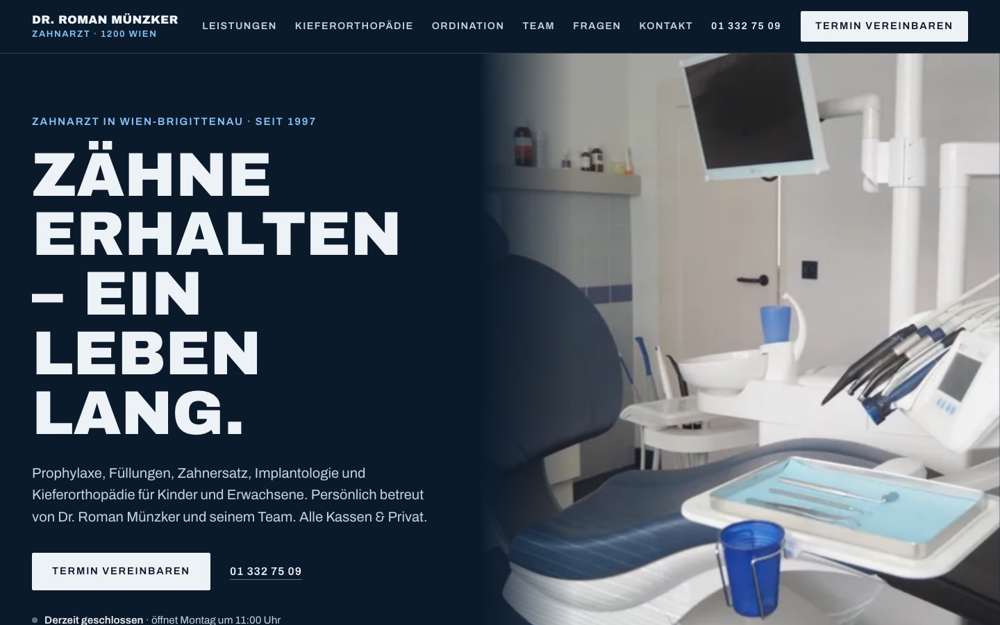
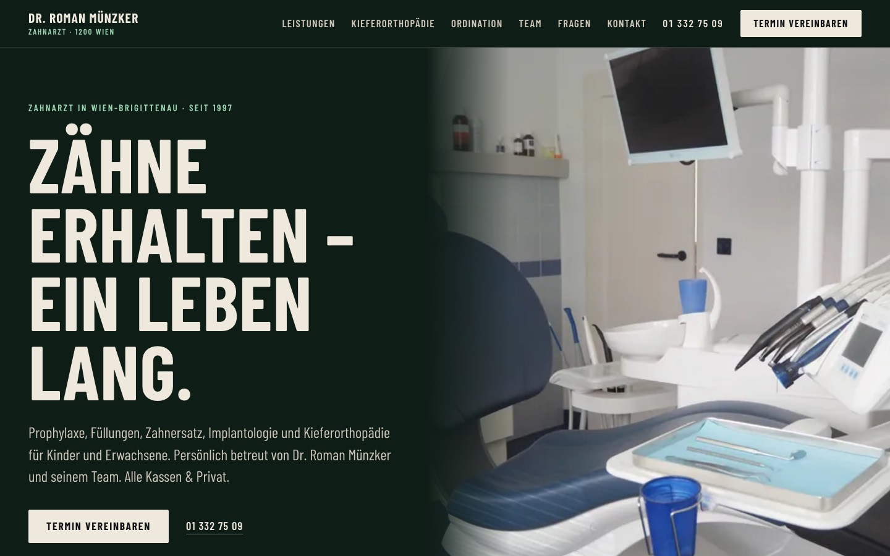
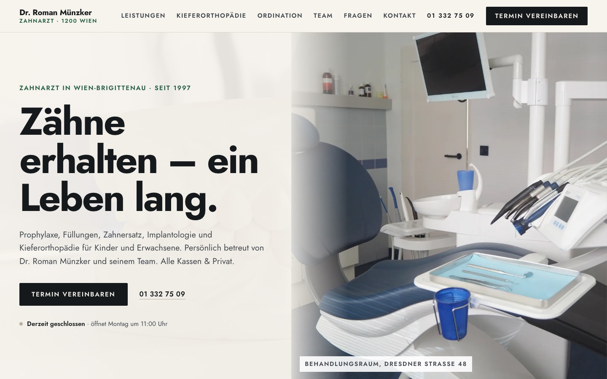

Gleiches Layout und gleiche Inhalte, jeweils eine Schrift und ein Hintergrund. Die Schriften sind freie Stellvertreter für Monstra Basic, Earlgos Condensed und Franie und werden nach dem Kauf getauscht.



Aktuelle Version (v1): zur Startseite